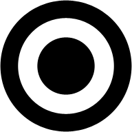

Reset and center zoom

Toggle fullscreen

Prime Visualization is a way to visually display Prime Numbers. Prime numbers are the numbers that can only be divided by 1 and by itself, e.g. 2, 3, 5, 7 and 11. But not 6 because it can be divided by 3 and 2.
Prime Visualization can be used to create beautiful graphics, but can also be used to find patterns in the distribution of Prime Numbers.
Finding patterns in Prime Numbers could be important for finding weaknesses in current encryption protocols, that rely heavily on prime numbers